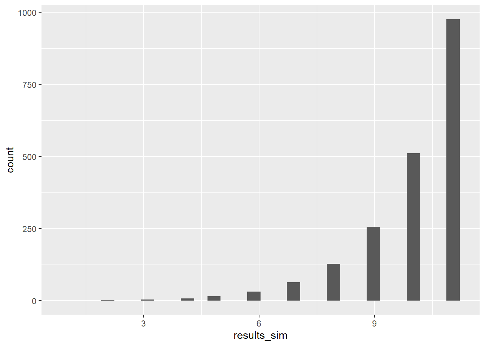

def binary_search(item, data, oper = False, diag = False):
# item: item in the data that we are interested in finding
# data: list or array of data with items we are interested in finding, assumes
# ordered integer data.
# oper: Logical T or F. Choose weather to include the number of operations.
# Default: False.
# diag: T or F. Choose to see the inner workings of the algorithm.
# Default: False.
# Begin by defining some variables for keeping track of x0 and xn
# as well as keeping track of the number of operations
x0 = 0 #defining the index of first element of the array
xn = len(data)-1 #defining the index of the last element of the array
operations = 0 #creating a varaible to count the number of operations.
# Beginning the actual function
while x0 <= xn: #while we are searching valid indices of our array
operations = operations + 1 #count one operation
mid = (xn + x0) // 2 #pick the middle index of the array (floor operation)
search = data[mid] # Value of the middle index (the one we are searching in)
#Diagnostics/Inner workings
#I had to use this a few times to resolve edge cases
if diag == True:
print("Target: ", item,
'\nLowest Index: ',
x0,"\nHigh Index: ",xn,
"\nIndex we are searching is: ",mid,
" Value: ",search)
#if the item we are searching for is the same as the value of the array
if search == item:
#if you want to see the number of operations
if oper == True:
#return the index of the item and the number of
# operations it took to find the item
print(f"Item {item} is located at index {mid}.\nThis took {operations} operations.")
return item, mid, operations
else:
#return the position of the item
print(f"Item {item} is located at index {mid}.")
return item, mid, operations
# if our guess is too low
elif search < item:
#update the low index position to be the middle guess.
# Adding 1 so we don't recheck the same index twice
x0 = mid + 1
#diagnostics
if diag == True:
print('Search was too low') #debugging
# if our guess is too high
elif search > item:
# update the high position to be the middle guess.
# Subtracting 1 so we don't check the same index
# twice, as that would be slow.
xn = mid - 1
#diagnostics:
if diag == True:
print("Search was too high") #debugging
# if we can't find the item in the array.
return print("Item Not Found\nThis took ", operations, ' operations.')Algorithms Assignment 1
Problem 1
For this problem we are writing psuedocode for an iterative binary search algorithm that works over an array.
To design an alogorithm to perform this task, we would implement something similar to the following:
Assume we have an ordered array \(X=\{x_0,x_1,\ldots,x_n\}\), where \(x_i \leq x_{i+1}\), where \(i=0,1,2,\ldots,n\).
We will define the value or object that we are looking for \(y\). Also assume that \(y\in X\)
- Find the outer bounds of the array.
- Define the largest index (\(x_n\)).
- Define the beginning (first) index to be the smallest (\(x_0\)).
- Find the middle index \(\frac{n}{2}\) (round to the nearest integer if \(n\) is odd).
- Inspect the value of the middle index \(x_{\frac{n}{2}}\).
- If the value of \(x_{\frac{n}{2}}\) equals \(y\), stop because we have found the index of \(y\)
- If the value of \(y< x_{\frac{n}{2}}\).
- Redefine \(x_n=x_{\frac{n}{2}}\).
- Pick a new \(x_{\frac{n}{2}}\) using the same process as step 2.
- Go to step 3.
- If the value of \(y > x_{\frac{n}{2}}\).
- Redefine \(x_0=x_{\frac{n}{2}}\)
- Pick a new \(x_{\frac{n}{2}}\) using the same process as step 2.
- Go to step 3.
For each step in the algorithm, we are dividing the array in half, searching the middle index of the array, and then redefining the area in the array that we have to search. We do this until we have either found the index of the item, or we have exhausted all the possible indices of the array to search, in which case we can conclude that the item is not an element of the array.
Problem 2
For this problem we have to write in code a binary search algorithm. For this I will be using Python.
Problem 3
For this problem we are given an attached file numbers.txt and we must use the algorithm that we wrote in problem 2 to answer the following question:
To begin we must load the numbers.txt file.
## Importing the numbers data using the Pandas library as a dataframe
numbers = pd.read_csv("./Data/numbers.txt",
header=None,
sep='\t'
)
## Converting Numbers to an array using Numpy ##
numbers = numbers.to_numpy()
# now back to base python for ease of use with the algorithm I just wrote:
numbers = numbers.tolist()
# fixing some jankiness with importing the data
# so that all the elements of the list are integers
# instead of being lists of length 1, thanks ChatGPT.
con_numbers = [num[0] for num in numbers]
numbers = con_numbersa. What is the position of 51216352 in the array? How many operations did it take to find?
We can find the position of 51216352 using the following code:
p1=binary_search(51216352, numbers, oper=True)Item 51216352 is located at index 499.
This took 2 operations.b. What is the position of 198313119 in the array? How many operations did it take to find?
We can find the position of 198313119 using the following code:
p2=binary_search(198313119, numbers, oper=True)Item 198313119 is located at index 1980.
This took 11 operations.c. What is the position of 196614208 in the array? How many operations did it take to find?
We can find the position of 196614208 using the following code:
p3=binary_search(196614208,numbers, oper=True)Item Not Found
This took 11 operations.d. What is the worst case time complexity? Evaluate line by line, create a time complexity function and then define its Big O value.
Assume we have an ordered array \(X=\{x_0,x_1,\ldots,x_n\}\), where \(x_i \leq x_{i+1}\), where \(i=1,2,3,\ldots,n\). Lets consider the case of the item we are searching for being \(x_n\), the last item of our array. If we were searching one item at a time, as with linear search, our time complexity function would be \(O(n)\).
To find the worst case time complexity for our binary search function we should consider the case where we are searching for the item in index [0] of our array, or the first item in the array (the same idea holds if we were searching for the item in index [n-1], the last item in our array). Because we are dividing the search area in half for each iteration, we are solving the problem of \(\frac{n}{2^x}=1\). Where \(n\) is the number of items in our array, and \(x\) is the number of divisions required to have 1 element.
We can show this via the following where we will solve this equation for \(x\), the number of iterations, for a given \(n\):
\[ \frac{n}{2^x}=1 \]
\[ n\cdot (2^{-x})=1 \]
\[ \log_2(n\cdot (2^{-x}))=\log_2(1) \]
\[ \log_2(n)+\log_2(2^{-x})=\log_2(1) \]
\[ \log_2(n)-x=0 \]
\[ \log_2(n)=x \]
above we have shown that it will take at most \(\log_2(n)\) steps to reduce the size of our search area to \(1\) index, given an array of size \(n\). Thus we can say that the worst case time complexity of our binary search algorithm is \(O(\log_2(n))\).
e. What would the worst case time complexity be if we have 4000 entries instead of 2000?
The worst case time complexity function for this algorithm is \(O(\log_2(n))\). Thus we can say that the worst case time complexity if we have \(4000\) entries is found by \(\log_2(4000) \approx\) {r} log_2_4000. This is in contrast to if we only had \(2000\) entries where the worst case time complexity would be \(\log_2(2000)\approx\) 11. If we were to again double the size of of our array to \(8000\) entries, the worst case time complexity would be \(\log_2(8000)\approx\) 13 steps to find an item in the array.
f. What do you think the average case time complexity is for binary search? Explain your reasoning.
I would hypothesize that the average time complexity for binary search is \(\log_2(n)\), where \(n\) is the number of items (indices) of an array. We have previously shown in part d. that the worst case time complexity for binary search is \(O(\log_2(n))\).
It is important to note that, \(\log_2(2000)\approx\) 11.
To show that the average time complexity for this function is \(\log_2(n)\), I will simply run it for each index of numbers.txt and record the number of operations it takes to find the value, then investigate the distribution of the number of operations.
operations_numbers = [] #storage vector for the number of operations each function call takes.
# each iteration searches for the value of the i-th index of numbers
for i in range(1999):
_,_, ops = binary_search(numbers[i], numbers)
operations_numbers.append(ops) print(operations_numbers) #debuggingNow we go to R to visualize the results.
# Here I am visualizing the results of the simulation on the number of operations it takes
# I am using R because I am more familiar with it and because ggplot2 is the best data
# visualizaiton tool out there in my opinion.
results_sim <- py$operations_numbers
results_sim.df <- as.data.frame(results_sim)
ggplot(results_sim.df, aes(x= results_sim))+geom_histogram()`stat_bin()` using `bins = 30`. Pick better value with `binwidth`.
We find that the average number of operations our binary search algorithm took to be 9.9814907 operations. We can compare this to our hypothesized value of \(11\). We note that the average number of operations from our simulation is less than our hypothesized value of \(11\).
In our simulation, we only searched for items that we knew for a fact were contained in the array, but what if we instead consider all real numbers in the range of values contained within our array. There will be an infinite number of values that will not be explicitly defined within our array, but is still contained within the array. For example consider the a value that is the average of two indices of numbers.txt, say the average of numbers[10] and numbers[11]. This value will be somewhere between numbers[10] and numbers[11], but will still be within the range of the possible values in our array.
print(numbers[10])1042433print(numbers[11])1118371numbers_10_11_avg = (numbers[10]+numbers[11])//2
print(numbers_10_11_avg)1080402If we are to search for this average value using our binary search function on numbers.txt we will get the following:
binary_search(numbers_10_11_avg,numbers)Item Not Found
This took 11 operations.We have also seen in part c. that when we search for an item that is not found in numbers.txt it will take \(11\) operations to conclude that the item is not in numbers.txt. Because of this we can say that if we think of the possible search terms, using numbers.txt as our example, as being any possible number in the range of values contained within numbers.txt instead of being only the searchable numbers in numbers.txt, the average number of searches will trend towards 11, which is approximately \(\log_2(1999)\).
Problem 4
Evaluate the time complexity of the following code snippets. Evaluate line by line, create a time complexity function and then define its Big O value.
a.
function sum(arr){ ##Function that sums the values of an array
counter = 0 #counter for keeping track of sum of array
for (i = 0; i < arr.length; i++) { # n iterations, one for each entry of the array
counter += arr[i] # 1 operation each time
}
return counter
}Because we are iterating through each index of the given array and performing one operation each time, we can say that the time complexity for this funciton can be given by \(O(n)\), where \(n\) is the size of the array.
b.
function getXOR(arr1, arr2){ # Exclusive Or, in A or B, but not both.
# inputs are two arrays, returns values in only one
arr3 = [] # of the arrays but not in both
for (i = 0; i < arr1.length; i++){ # n1 iterations, length of arr1
let unique = True # 1 operation
for (j = 0; j < arr2.length; j++ ){ # n2 iterations, length of arr2
if(arr1[i] == arr2[j]) {unique = False;} # 1 operation
}
if (unique) {arr3.append(arr1[i]);} # 1 operation
}
# the above for loop takes n1*n2 iterations to check each index for uniqueness
for (i = 0; i < arr2.length; i++){ # n2 iterations, length of arr2
let unique = True
for (j = 0; j < arr1.length; j++ ){ # n1 iterations, length of arr1
if(arr2[i] == arr1[j]) {unique = False;}
}
if (unique) {arr3.append(arr2[i]);}
}
return arr[3]
}
# the above for loop takes n1*n2 iteartions to complete
# each loop takes place independently of the otherLet \(n\) be the length of arr1.
Let \(m\) be the length of arr2.
In the first outer for loop, it will take \(n\) operations to visit each index of arr1. Within the nested for loop, it will take another \(m\) operations for each \(n\) to visit and compare with each index of arr2. Thus it will take \(n\cdot m\) operations to complete. Thus we can say that for the first for loop, the time complexity function is \(O(n\cdot m)\).
In the second outer for loop, it will take \(m\) operations to visit each index of arr2. Within the nested for loop, it will take another \(n\) operations for each \(m\) to visit and compare with each index of arr1. Thus it will take \(m\cdot n\) operations to complete. Thus we can say that for the second for loop, the time complexity function is \(O(m\cdot n)\).
Note that the time complexity functions for each for loop is the same, \(O(n\cdot m)\). We have two for loops however in this function, thus we can say that the time complexity of the function is \(O(2\cdot(n\cot m))\). Because Big Oh notation drops constants we can simplify this down to \(O(n\cdot m)\). Thus the time complexity for this function is \(O(n\cdot m)\), where \(n\) and \(m\) are the lengths of arr1 and arr2 respectively.
In the case where arr1 and arr2 are the same size, \(n=m\), the time complexity of this function will be \(O(n^2)\).